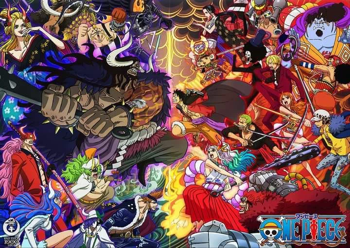
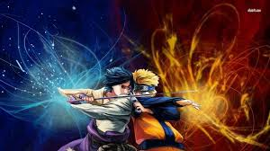
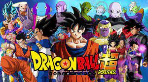
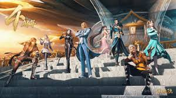
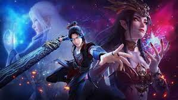
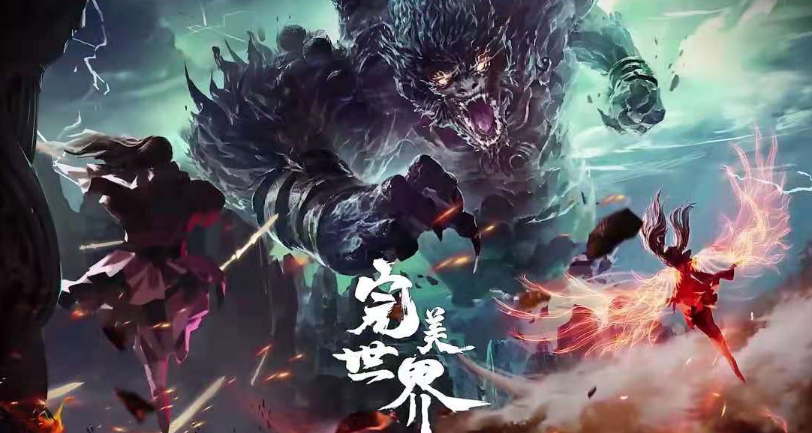

All Anime
One Piece
Naruto
Fairy tail
Dragon ball
Đấu la đại lục
Đấu phá thương khung
Thế giới hoàn mỹ
Tinh thần biến
About
During the war, in addition to entertainment purposes, manga was also used for propaganda or satirical purposes to serve the national interest, so during this time Japanese comics were subjected to heavy censorship and censorship. The development of Japanese manga seems to have been postponed indefinitely
After the war, ASAMU TEZUKA stood up to revive the manga industry, bringing to Japanese culture and the world a whole new genre of manga. He helped shape the first true manga model and started an industry that still holds a strategic place in modern Japanese culture.
ConTact